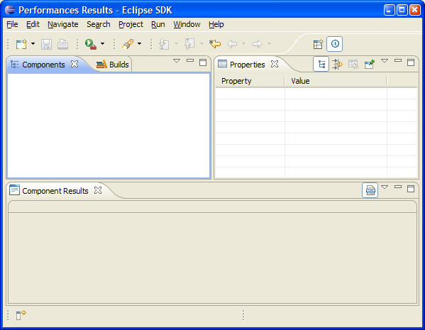

There are 4 views in this perspective:
The goal of this tool is both to look at performance results database numbers and to verify whether a build result have scenarios showing performance regression.
The view to use to look at performance results number is the Components view. In this view, results are displayed in a hierarchical tree which have a similar structure than the generated HTML pages (e.g. Eclipse 3.6.0). The complete performance results information is provided on each element of the tree in the Properties view. This is typically useful when a scenario results looks weird to have the ability to verify that the numbers looks correct or not.
The view to verify whether a regression occurs is the Components Results view. All results for one component are shown in a single table which also provides all necessary information to decide whether a noticed regression could be confirmed or not.